After COVID-19, online learning exploded — but instructors lost the ability to read the room. In a physical classroom, a confused frown or a bored yawn is immediately visible. On Zoom, that feedback disappears. You have no idea if anyone is actually engaged.
EmoLearn addresses this by watching student webcam video through two visual lenses — facial appearance and geometric head/eye/mouth measurements — and automatically detecting engagement levels using multimodal fusion with recurrent neural networks.
The system detects four affective states: Engagement, Boredom, Confusion, and Frustration. Each is classified as Low or High from 10-second webcam video clips, providing real-time feedback to instructors about which students may be struggling.
We use the DAiSEE (Dataset for Affective States in E-Environments) dataset collected at IIIT-Hyderabad, India. 112 university students (ages 18-30) sat in front of computers watching two types of videos — one educational, one recreational — while a webcam recorded them in real-world settings (dorm rooms, libraries, labs) with varying lighting conditions.
Each clip is labeled for four affective states on a 4-level scale (Very Low / Low / High / Very High). Labels were crowdsourced from 10 annotators per clip, aggregated using the Dawid-Skene algorithm, and validated by expert psychologists. All participants gave signed consent. The dataset is split into Train (5,358), Validation (1,429), and Test (1,784) clips.
From each 10-second clip (300 frames at 30fps), we uniformly sample 10 frames for efficiency. Each frame is processed independently through both feature extraction pipelines.
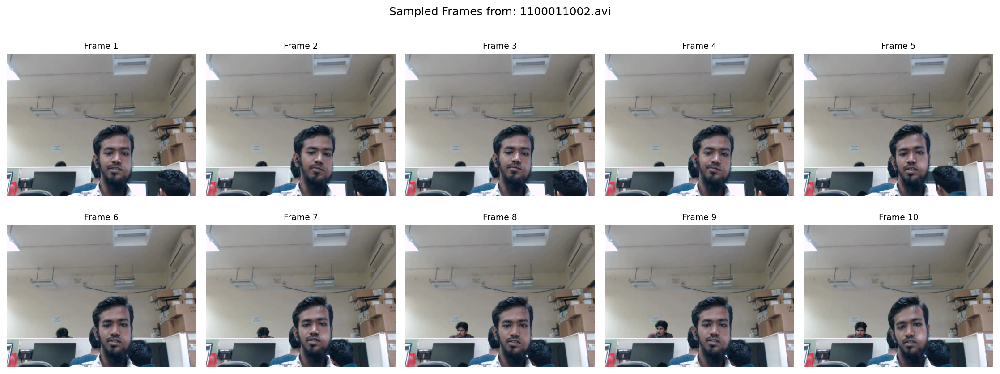
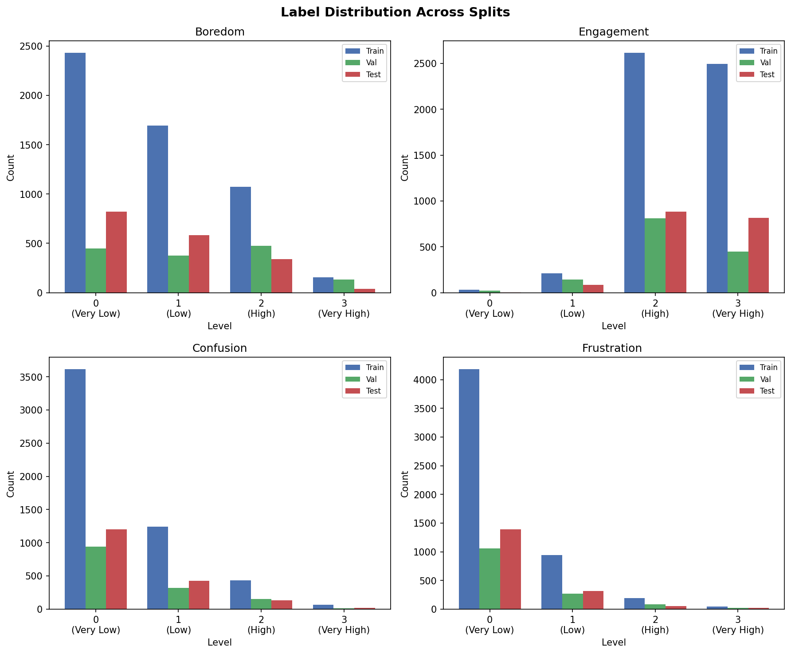
The engagement distribution is severely imbalanced:
| Level | Train | Val | Test | % of Train |
|---|---|---|---|---|
| Very Low (0) | 33 | 23 | 4 | 0.7% |
| Low (1) | 201 | 143 | 84 | 4.1% |
| High (2) | 2,474 | 813 | 882 | 51.0% |
| Very High (3) | 2,144 | 450 | 814 | 44.2% |
Since students silently watch videos, there is no meaningful audio signal. We derive two complementary visual modalities from the webcam feed.
What the face looks like — pixel-level information
Each frame is processed by MediaPipe FaceDetector to locate and crop the face, resized to 224×224 pixels. The crop is fed through pretrained ResNet-18 (ImageNet weights, classification head removed), producing a 512-dimensional embedding per frame. This encodes brow tension, eye openness, lip shape, micro-expressions.
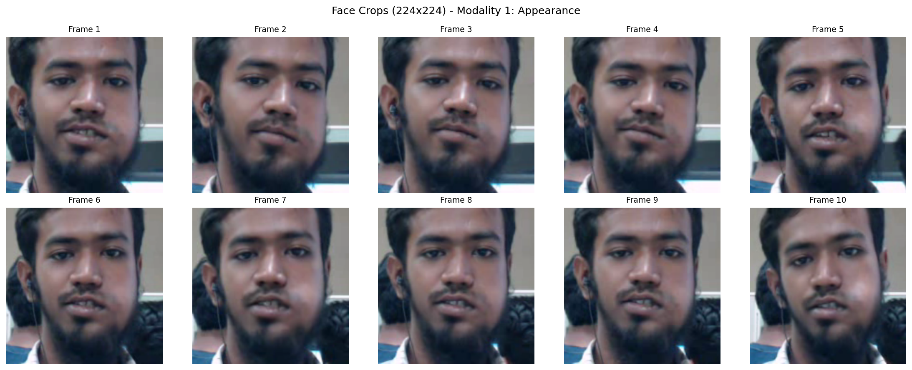
How the face is positioned — coordinate-level information
MediaPipe FaceLandmarker detects 478 facial keypoints. From these we compute 6 interpretable features: head pose (pitch/yaw/roll via solvePnP), left & right Eye Aspect Ratio (drowsiness), and Mouth Aspect Ratio (yawning).
| Feature | What it measures |
|---|---|
| Pitch | Head up/down (nodding) |
| Yaw | Head left/right (turning away) |
| Roll | Head sideways tilt |
| L_EAR / R_EAR | Eye openness (drowsiness) |
| MAR | Mouth openness (yawning) |
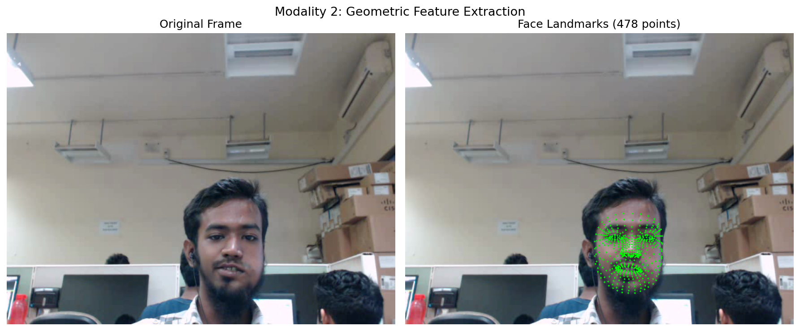
We then compute statistical features (mean, std, min, max) across 10 frames, yielding 2,048-dim appearance and 24-dim geometric vectors. The std captures temporal variability — a fidgeting student has high std in yaw; a drowsy student has decreasing EAR over time.
Statistical features (mean and std across 10 frames) reveal overall behavior patterns. Most students face the screen (yaw ~0) with eyes moderately open (EAR ~0.25-0.30). The std values cluster near zero — students don't move much in 10 seconds.
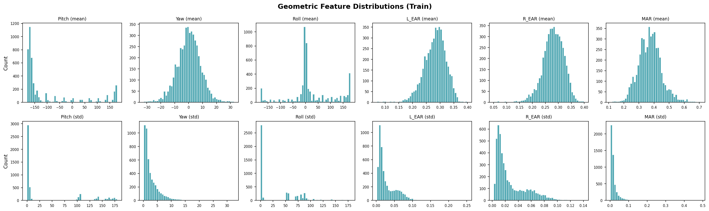
ResNet-18 embedding dimensions follow diverse distributions — some right-skewed, others roughly normal — showing the 512 dimensions encode diverse, non-redundant facial information.
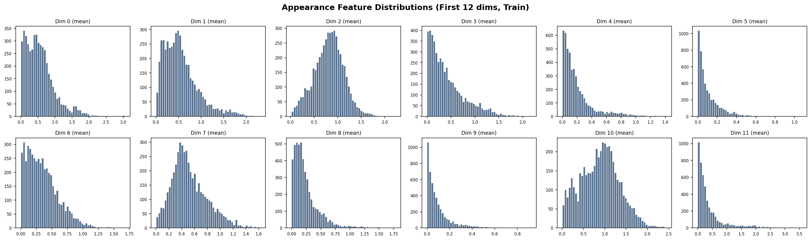
Using kernel density estimation (normalized per class) to compare Low vs High engagement on the same scale:
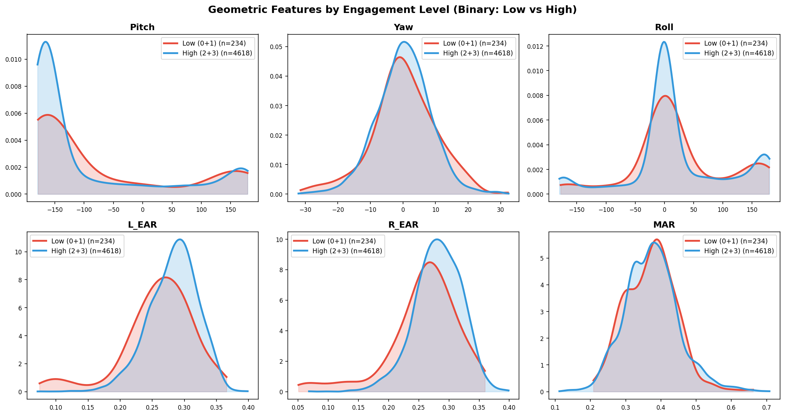
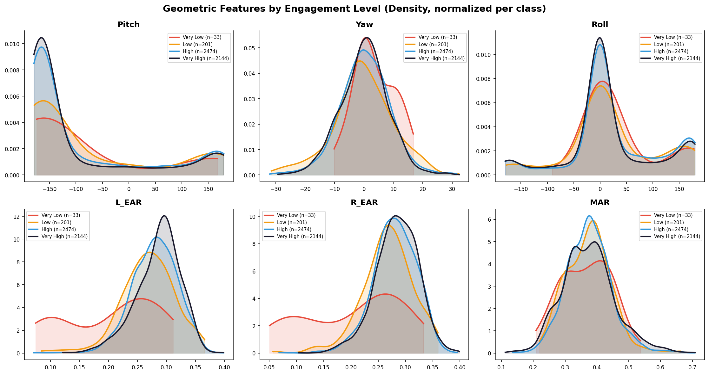
| Category | Architecture | Description |
|---|---|---|
| Baseline | MLP | Averaged or statistical features → fully connected layers |
| Temporal | LSTM / GRU | Frame sequences (10×D) → recurrent network → last hidden state |
| Fusion | Early / Late | Concatenate modalities at input (early) or after encoders (late) |
| Attention | Cross-modal Attn | Learns dynamic per-sample modality weights via attention |
| MIL | Attention / Gated MIL | Bag-of-frames; learns frame importance via attention pooling |
| Strategy | How it works |
|---|---|
| Cross-Entropy | Standard loss — treats all samples equally |
| Class Weighting | Inverse frequency weights (Very Low gets ~37× weight of High) |
| Focal Loss (γ=2) | -(1-pt)γlog(pt): down-weights easy majority, focuses on hard minority |
| Oversampling | WeightedRandomSampler repeats minority in each batch |
Initial experiments with MLP baselines on averaged features, 30 epochs, Adam + ReduceLROnPlateau, Apple M4 (MPS).
| Model | Accuracy | F1 (macro) | F1 (weighted) |
|---|---|---|---|
| Geometric Only | 0.518 | 0.171 | 0.354 |
| Appearance Only | 0.557 | 0.258 | 0.503 |
| Early Fusion | 0.491 | 0.249 | 0.477 |
| Early Fusion + Weights | 0.435 | 0.247 | 0.451 |
| Late Fusion + Weights | 0.526 | 0.255 | 0.493 |
| DAiSEE Paper (LRCN) | 0.579 | — | — |
We tested 17 model variants. Best 4-class F1 remains 0.276 (Appearance GRU). Focal loss + oversampling actually made 4-class worse — repeating 33 samples causes overfitting.
| Model | Accuracy | F1 Macro |
|---|---|---|
| Appearance GRU | 0.526 | 0.276 |
| Early Fusion MLP | 0.522 | 0.267 |
| Early Fusion LSTM | 0.485 | 0.259 |
| Geometric MLP | 0.529 | 0.255 |
| Appearance MLP | 0.496 | 0.253 |
| EF LSTM+Focal | 0.314 | 0.194 |
Merging levels 0+1 → Low, 2+3 → High (matching DAiSEE paper). 234 Low vs 4,618 High (4.8% minority).
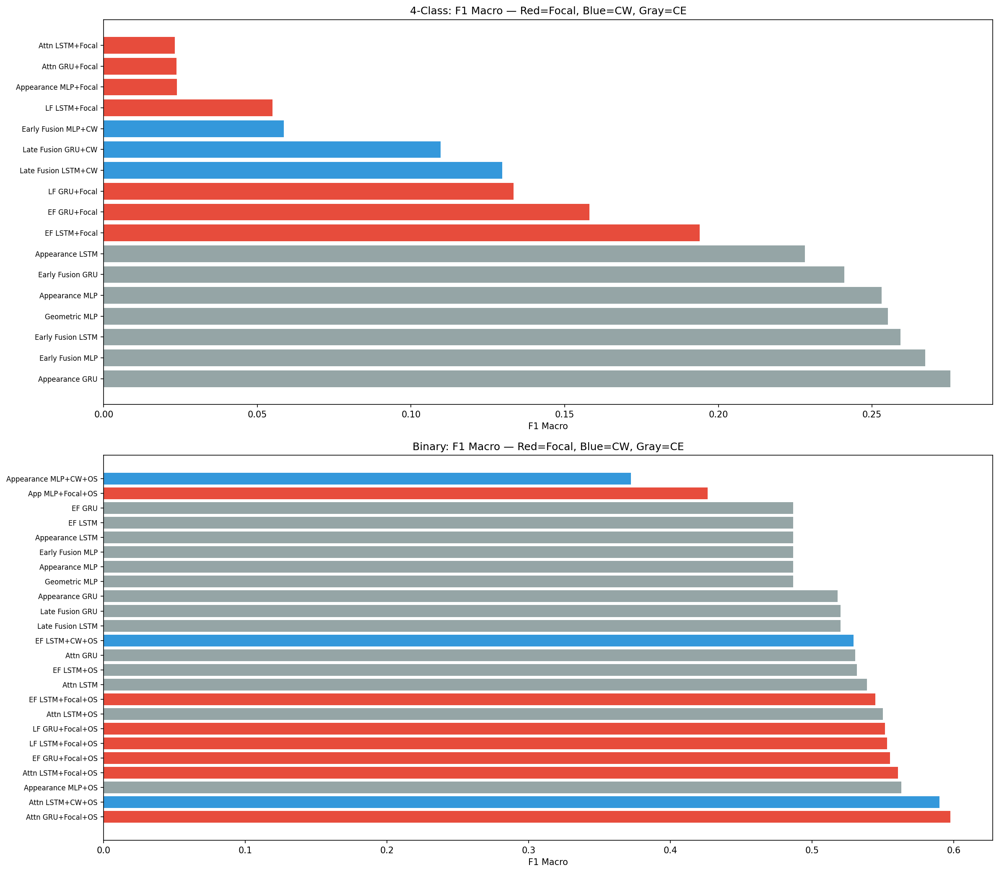
| Model | Accuracy | F1 Macro | Strategy |
|---|---|---|---|
| Attn GRU+Focal+OS | 0.921 | 0.598 | Focal + Oversample |
| Attn LSTM+CW+OS | 0.885 | 0.590 | CW + Oversample |
| Appearance MLP+OS | 0.908 | 0.563 | CE + Oversample |
| Attn LSTM+Focal+OS | 0.919 | 0.560 | Focal + Oversample |
| EF GRU+Focal+OS | 0.891 | 0.555 | Focal + Oversample |
| LF LSTM+Focal+OS | 0.824 | 0.553 | Focal + Oversample |
| All CE Baselines | 0.948 | 0.487 | Predicts all "High" |
| DAiSEE Paper (LRCN) | 0.946 | — |
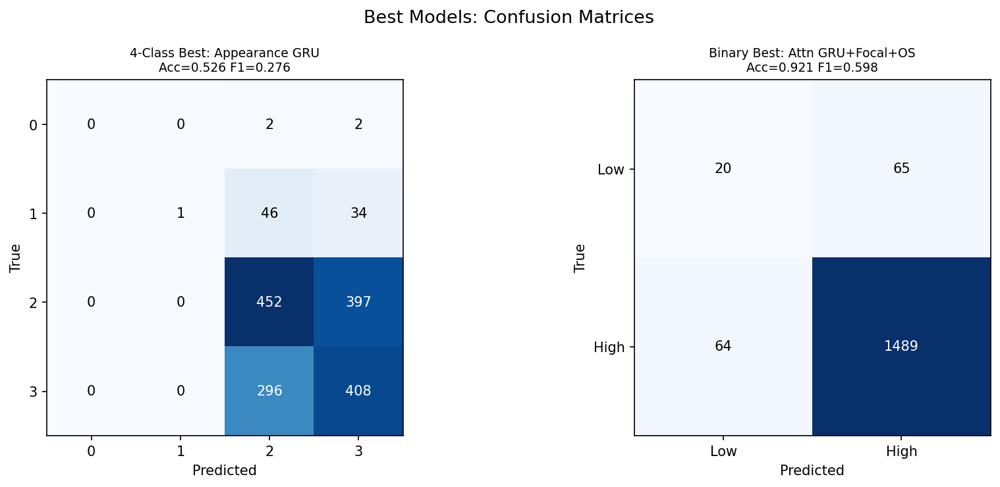
| Config | LSTM Acc | GRU Acc | LSTM F1 | GRU F1 |
|---|---|---|---|---|
| Appearance | 0.948 | 0.946 | 0.487 | 0.518 |
| Early Fusion | 0.948 | 0.948 | 0.487 | 0.487 |
| Late Fusion | 0.949 | 0.949 | 0.520 | 0.520 |
| Attention | 0.948 | 0.949 | 0.539 | 0.530 |
Based on professor feedback: (1) statistical features (mean/std/min/max) instead of averaging, and (2) Multiple Instance Learning treating each video as a bag of frame instances.
Instead of averaging 10 frames into 1 vector, compute four statistics per dimension: mean, std, min, max. Appearance: (10,512) → 2,048-dim. Geometric: (10,6) → 24-dim. The std captures temporal variability that averaging destroys.
MIL treats frames as an unordered bag. Attention pooling learns which frames matter most — perhaps the frame where the student yawns matters more than one where they sit still. Three variants: Attention MIL, Appearance MIL, Gated Attention MIL (Ilse et al., 2018).
| Model | Accuracy | F1 Macro | Type |
|---|---|---|---|
| Stat Fusion MLP+OS | 0.876 | 0.594 | Statistical |
| Stat Fusion MLP | 0.946 | 0.586 | Statistical |
| Attention MIL+OS | 0.910 | 0.583 | MIL |
| Stat App MLP+Focal+OS | 0.872 | 0.574 | Statistical |
| Appearance MIL+Focal+OS | 0.790 | 0.540 | MIL |
| Attn GRU+Focal+OS | 0.810 | 0.521 | Temporal |
| Attention MIL | 0.949 | 0.521 | MIL (no OS) |
| Gated MIL+Focal+OS | 0.649 | 0.459 | MIL |
Extended to all states using binary classification. Stat MLP+OS and Attn GRU+Focal+OS compared.
| State | Best Model | Accuracy | F1 Macro | Minority % |
|---|---|---|---|---|
| Engagement | Stat MLP | 90.4% | 0.628 | 4.8% Low |
| Confusion | Stat MLP | 84.3% | 0.579 | 9.5% High |
| Frustration | Stat MLP | 87.0% | 0.563 | 4.6% High |
| Boredom | Stat MLP | 58.2% | 0.494 | 24.5% High |
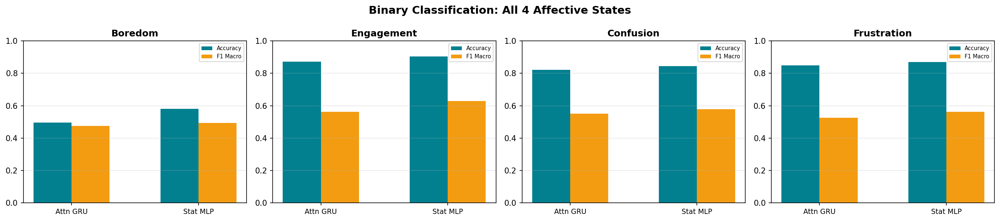
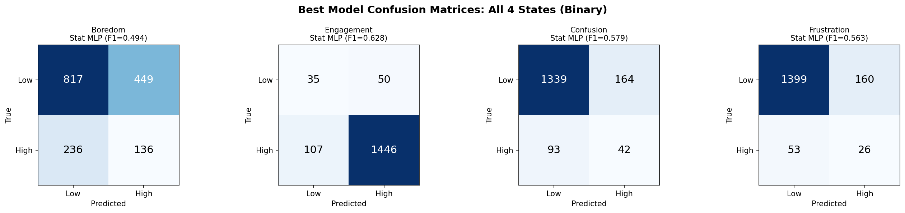
Dataset has 2.13:1 male-to-female ratio (80 male, 32 female students). We evaluated Attn GRU+Focal+OS separately by gender.
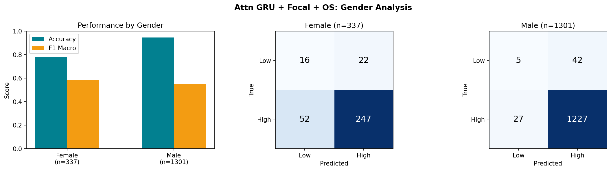
| Metric | Female (n=337) | Male (n=1,301) |
|---|---|---|
| Class distribution | Low=38, High=299 (11.3%) | Low=47, High=1,254 (3.6%) |
| Accuracy | 78.0% | 94.7% |
| F1 Macro | 0.586 | 0.550 |
| Low Recall | 42% (16/38) | 11% (5/47) |
| High Recall | 83% | 98% |
Trained on N-1 users, tested on 1 unseen user, repeated for 20 sampled users (101 total, 7,919 clips). Attn GRU+Focal+OS, 15 epochs per fold.
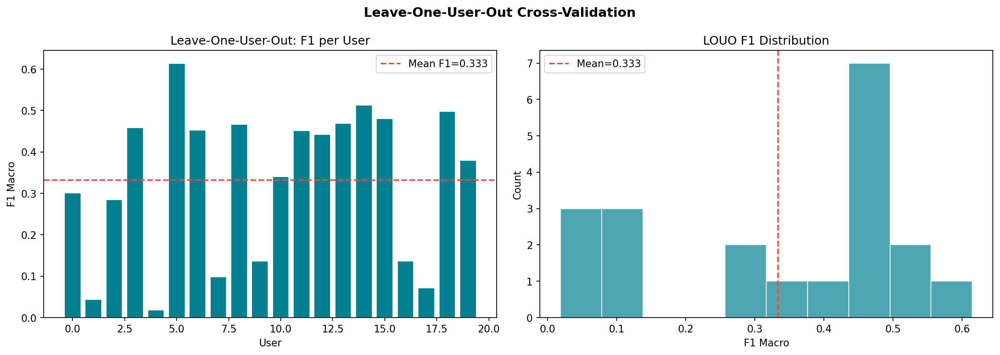
| Metric | Standard Split | LOUO (20 users) |
|---|---|---|
| Mean Accuracy | 92.1% | 47.2% ± 30.3% |
| Mean F1 Macro | 0.628 | 0.333 ± 0.184 |
Per-user F1 ranges from 0.018 (User 310074) to 0.614 (User 310068). This extreme variance shows people express engagement very differently.
Full pipeline on video clip 1100021001.avi:
| Step | Input | Output |
|---|---|---|
| 1. Frame sampling | 10-sec video (300 frames) | 10 frames at [0, 33, 66, ..., 299] |
| 2. Face detection | 10 raw frames | 10 crops (224×224) via MediaPipe |
| 3. Appearance extraction | 10 face crops | (10, 512) via frozen ResNet-18 |
| 4. Geometric extraction | 10 raw frames | (10, 6) via MediaPipe landmarks |
| 5. Classification | (10, 512) + (10, 6) | High Engagement, 56.5% confidence |
Demo output: Prediction: High Engagement (56.5% confidence). Attention weights: Appearance 62.9%, Geometric 37.1%.
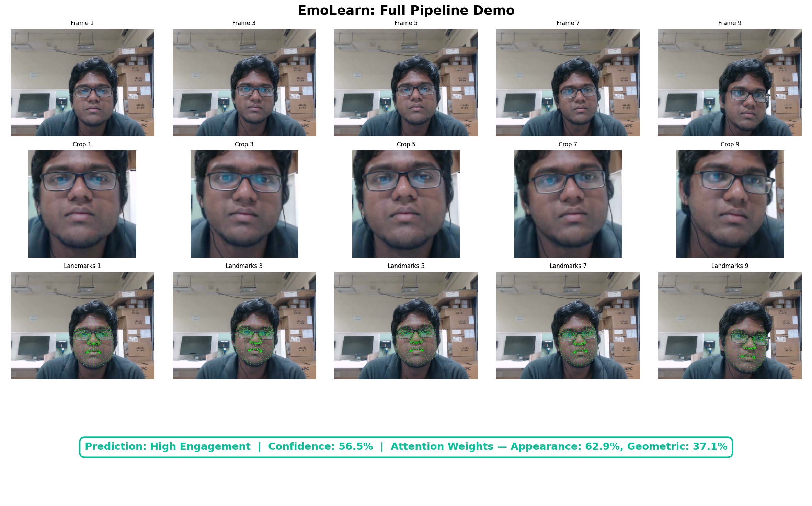